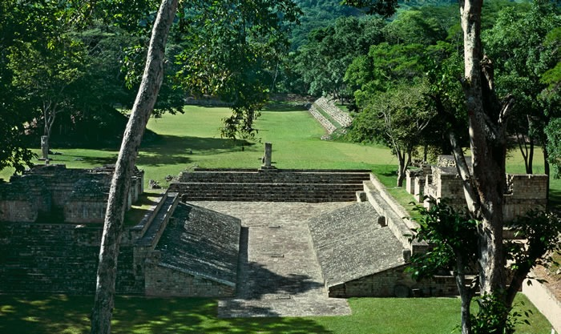
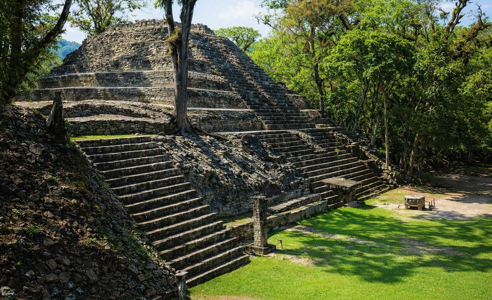

El Parque Arqueológico de Copán representa el corazón
monumental y político de esta antigua civilización en Honduras.
Al caminar por su plaza principal, los visitantes pueden
observar las impresionantes estelas, templos y monumentos
construidos por los antiguos habitantes de Copán.
La Escalinata de los Jeroglíficos constituye uno de los
monumentos más importantes del sitio arqueológico.
